Field Guide
Welcome to the field guide! Below, learn some ways you can identify Michigan's vulnerable mammals.
Moose
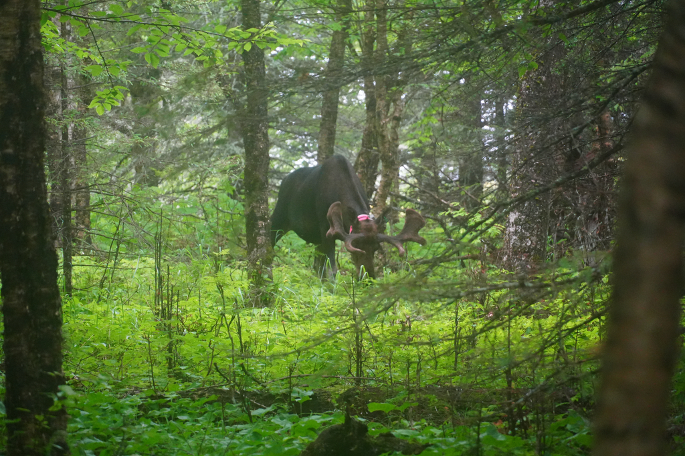
Alces alces
Status: Special concern
Estimated Population: 426 (2023)
TODO: Moose tracks, moose soundbite
Gray wolf
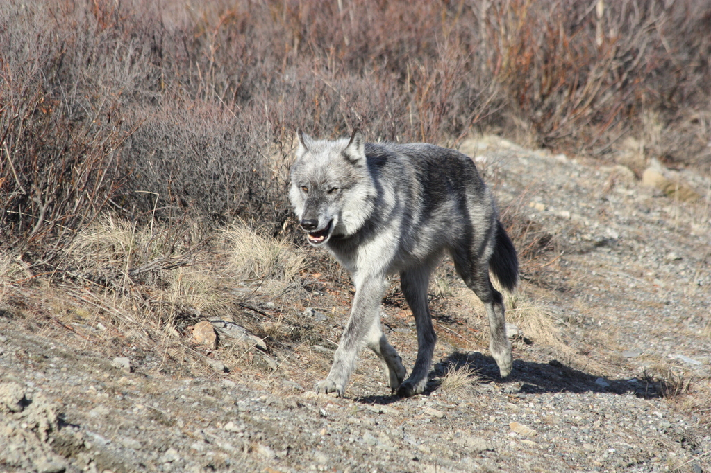
Canis lupus
Status: Special concern
Estimated Population: 768 (2024)
TODO: wolf tracks, wolf soundbite
Least shrew
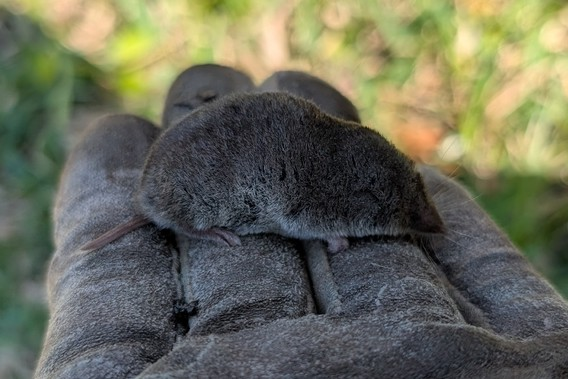
Cryptotis parvus
Status: Threatened
Estimated Population: Unknown
TODO: Least shrew tracks, least shrew soundbite
Current population levels are unknown, as surveys for the least shrew are infrequent.
Cougar
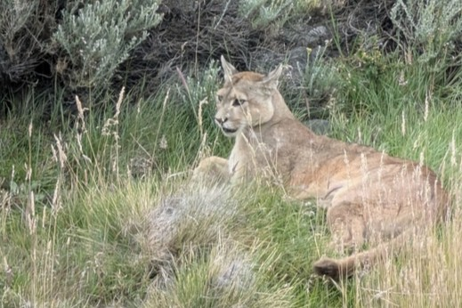
Puma concolor
Status: Endangered
Estimated Population: Unknown
TODO: Cougar tracks, cougar soundbite
Northern flying squirrel
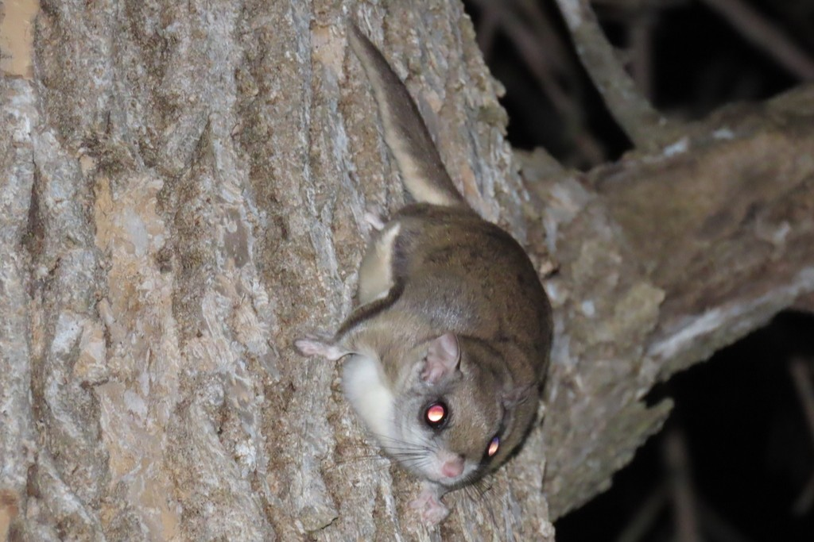
Glaucomys sabrinus
Status: Special concern
Estimated Population: Unknown
TODO: Flying squirrel tracks, flying squirrel soundbite
Canada lynx
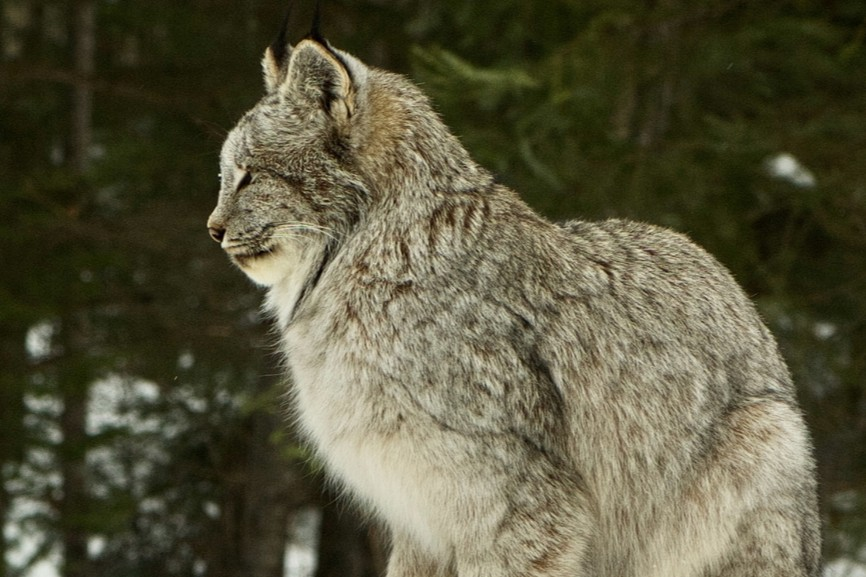
Lynx canadensis
Status: Endangered
Estimated Population: Unknown
TODO: Lynx tracks, lynx soundbite
Prairie vole
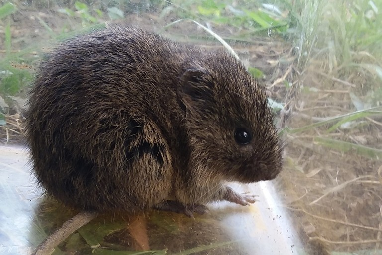
Microtus ochrogaster
Status: Endangered
Estimated Population: Unknown
Photo by Jordan Schmidt, iNaturalist (CC-BY-NC).
TODO: prairie vole tracks, prairie vole soundbite
Woodland vole
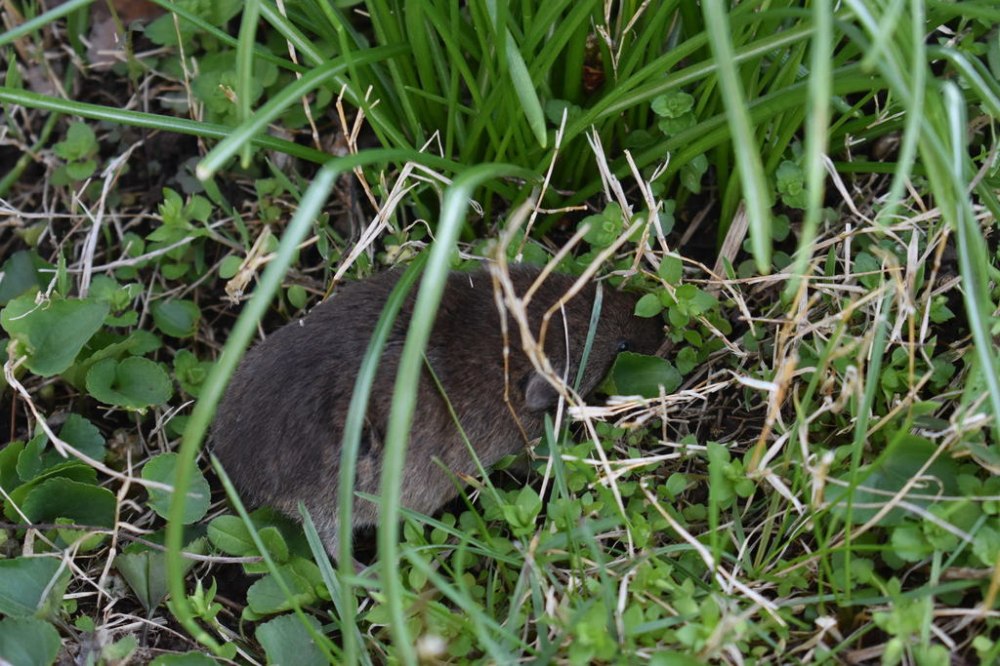
Microtus pinetorum
Status: Special concern
Estimated Population: Unknown
TODO: woodland vole tracks, woodland vole soundbite
Indiana bat
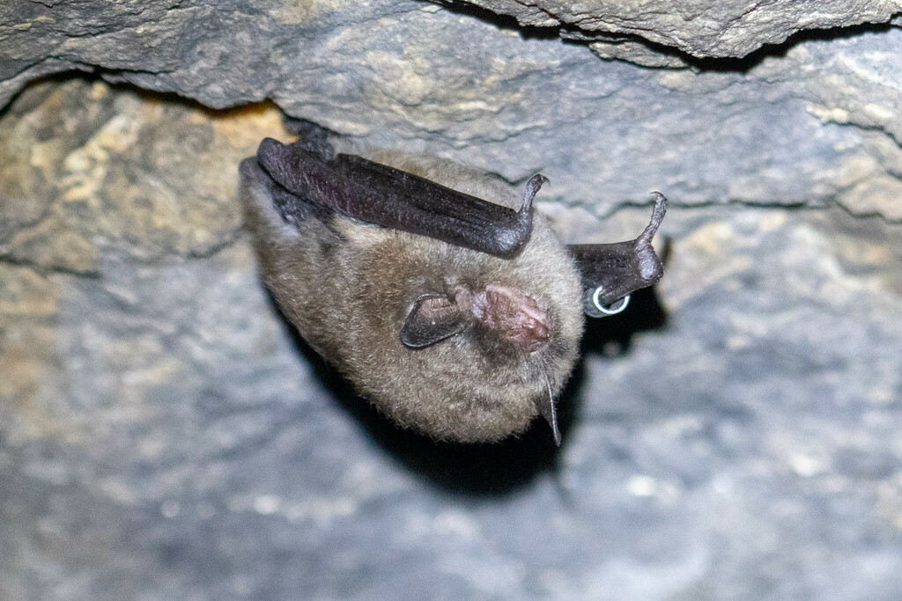
Myotis sodalis
Status: Endangered
Estimated Population: Unknown
Photo by: Amiel Hopkins, iNaturalist (CC-BY-NC).
TODO: Indiana bat tracks/soundbite
Evening bat
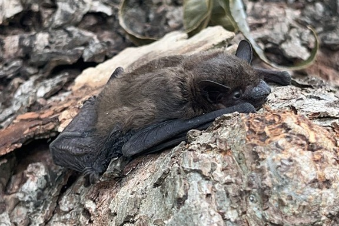
Nycticeius humeralis
Status: Threatened
Estimated Population: Unknown
Photo by JPage, iNaturalist (CC-BY-NC).
TODO: Evening bat tracks/soundbite
Eastern pipistrelle
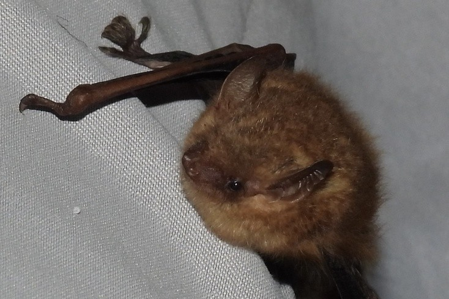
Pipistrellus subflavus
Status: Special Concern
Estimated Population: Unknown
Photo by Phillip T. Crawford,
iNaturalist (CC-BY-NC).
TODO: pipistrelle tracks/soundbite
Smoky shrew
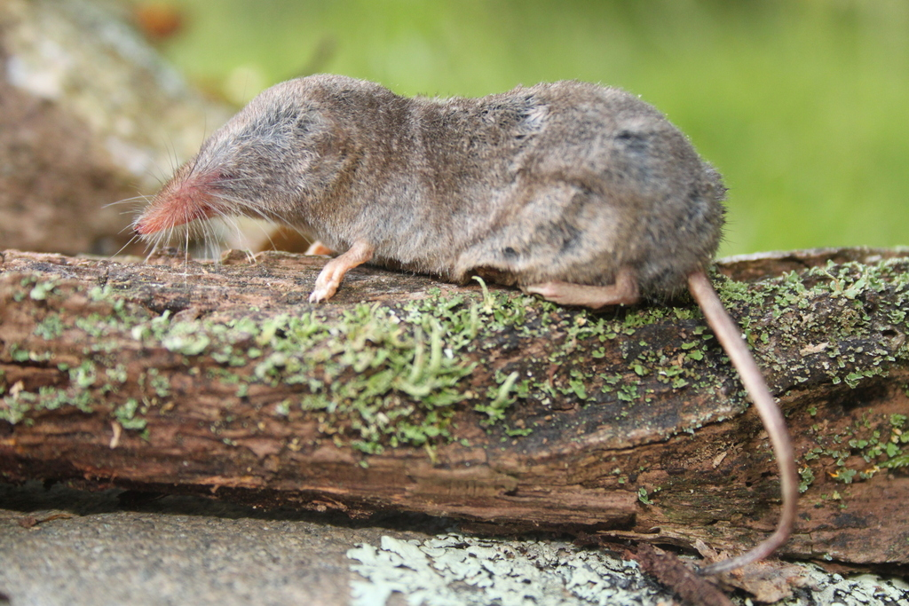
Sorex fumeus
Status: Threatened
Estimated Population: Unknown
Photo by rkluzco, iNaturalist (CC-BY-NC).
TODO: Smoky shrew tracks/soundbite.